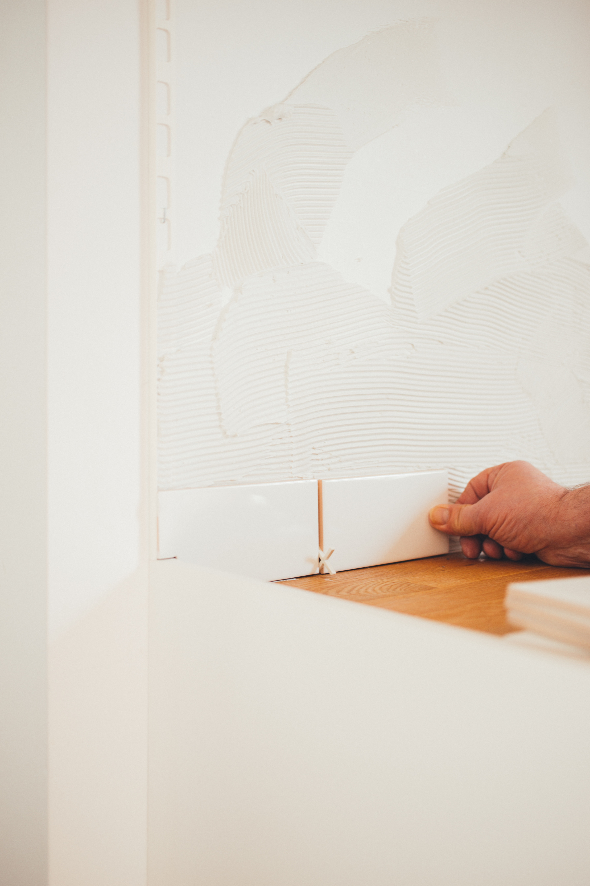

1.女性の戸建て購入
晩婚化や、生涯独身など、女性が男性と同じように稼いで生活することが普通になった現代では、戸建てを購入したいという女性が増えてきいるようです。セキュリティーや暮らしやすさなど、女性が戸建てを購入するときにチェックする点はもしかしたら、男性とは違うかもしれません。
2.女性が戸建てを持つメリット
女性が戸建てを持つとどんなメリットがあるのでしょうか。チェックしてみましょう。
①住む場所をを確保できる
今の時代、晩婚化や生涯独身の女性も珍しくありません。そんな女性にとって、戸建てを購入しておくことで住む場所を確保しておくことが出来るのは安心です。高齢になればなるほど、賃貸住宅を借りづらくなることもあるので、住み続けられる家を若いうちに購入しておくのは賢い選択かもしれませんね。
②自由が広がる
戸建てを持つことでライフスタイルの選択肢がが広がります。例えば、賃貸ではスペース的に難しかった家庭菜園を始めたり、思う存分服を集めたり、可愛いペットと一緒に暮らしたり、、と言い出したらキリがありませんが、賃貸ではできなかった生活が戸建てならできます。趣味がたくさんある女性、やりたいことがたくさんある女性にとっては戸建ての方が日々の生活が充実しそうです！
3.女性が戸建てを持つ際の注意点
実際に女性が戸建てを持つには、どのようなことに気をつけるべきか、確認しておきましょう
①自宅のメンテナンス
